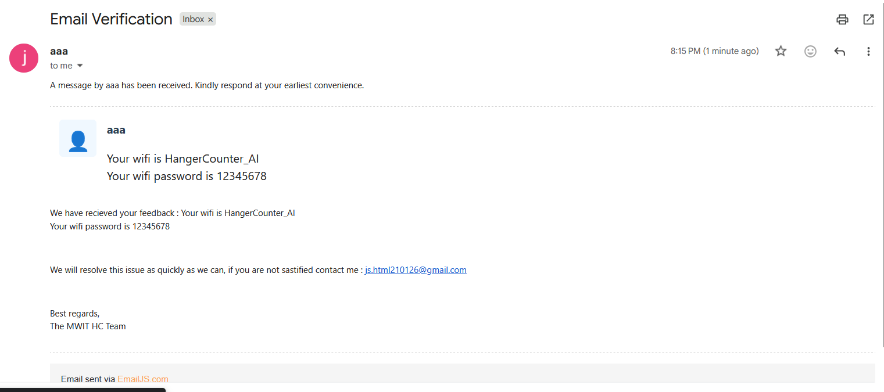
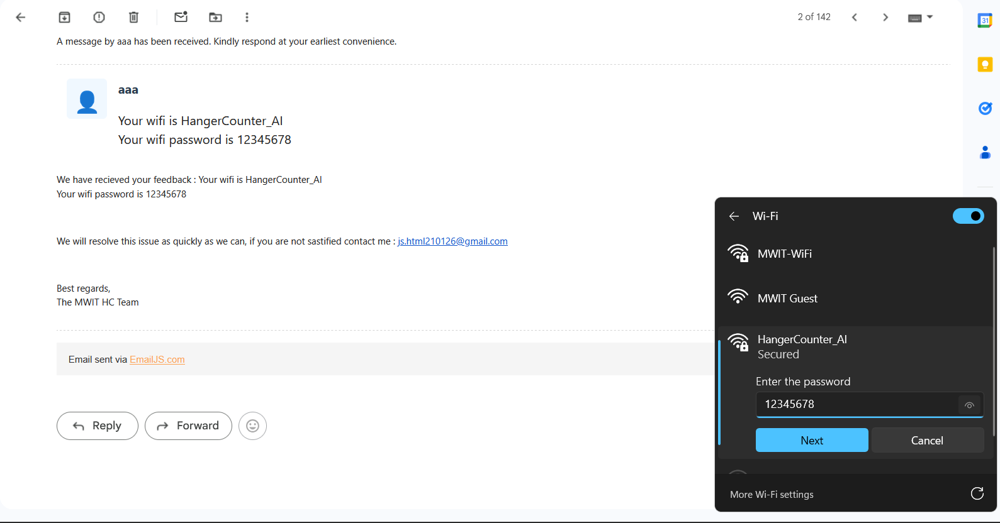

You are now going to access your hanger history
Please follow the intructions below
1. Check your confirmation email

2. Connect to the given wifi and password

3. You are all set!
Take me to the website